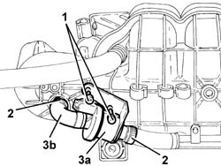
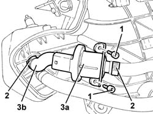

1080E28 enablement solenoid for flow of fuel vapour to inlet - r+r
- Path
- Procedures > 10 ENGINE > 1080 EXHAUST EMISSION CONTROL SYSTEM > 1080E evaporation control system > 1080E28 enablement solenoid for flow of fuel vapour to inlet - r+r
- Kind
- repair procedure (removal / refitting; the operation number is the code)
- Applies to
- engines: 1.6 TS, 2.0 TS, 3.2 V6; all production periods
- Interactive page
- https://sloeber94.github.io/elrnDB-a147/en/#/3024886
Applies to: engines: 1.6 TS; all production periods
 Removing
Removing
 Refitting
RefittingEnsure that the ignition key is in the OFF postition, then disconnect the battery negative terminal.
 | Name | Connector |
|---|---|---|
- | Battery |
Proceed with the removal 1016A40 ignition coil cover on cylinder head- r+r .
Proceed with the removal 1056B60 single fuel manifold pipe, with injectors - r + r .
Proceed with the removal 1072B50 sleeves connecting air capacity box to inlet manifold is - r+r .
1. At the bench, undo the bolts fixing the fuel vapour enabling solenoid to the inlet mounting bracket.
2. Loosen the bands.
3. Remove the fuel vapour enabling solenoid valve to the inlet (3a) complete with pipe (3b).

Applies to: engines: 1.6 TS; all production periods
Refitting
RemovingPlace the fuel vapour enabling solenoid valve to the inlet, complete with pipe, back in its housing and tighten the bands.
Tighten the bolts fixing the fuel vapour enabling solenoid valve to the inlet mounting bracket.
Proceed with the refitting 1072B50 sleeves connecting air capacity box to inlet manifold is - r+r .
Proceed with the refitting 1056B60 single fuel manifold pipe, with injectors - r + r .
Proceed with the refitting 1016A40 ignition coil cover on cylinder head- r+r .
Connect the battery terminal (-).
Applies to: engines: 2.0 TS; all production periods
Removing
RefittingPosition the vehicle on the ramp.
Ensure that the ignition key is in the OFF postition, then disconnect the battery negative terminal.
| Name | Connector |
|---|---|---|
- | Battery |
Proceed with the removal 7055B54 under-engine guard - r r .
Proceed with the removal 1016A40 ignition coil cover on cylinder head- r+r .
Proceed with the removal 1056B60 single fuel manifold pipe, with injectors - r + r .
Proceed with the removal 1072D10 modular inlet manifold - r+r .
1. At the bench, undo the bolts fixing the fuel vapour enabling solenoid to the inlet mounting bracket.
2. Loosen the bands.
3. Remove the fuel vapour enabling solenoid valve to the inlet (3a) complete with pipe (3b).

Applies to: engines: 2.0 TS; all production periods
Refitting
RemovingPlace the fuel vapour enabling solenoid valve to the inlet, complete with pipe, back in its housing and tighten the bands.
Tighten the bolts fixing the fuel vapour enabling solenoid valve to the inlet mounting bracket.
Proceed with the refitting 1072D10 modular inlet manifold - r+r .
Proceed with the refitting 1056B60 single fuel manifold pipe, with injectors - r + r .
Proceed with the refitting 1016A40 ignition coil cover on cylinder head- r+r .
Proceed with the refitting 7055B54 under-engine guard - r r .
Connect the battery terminal (-).
Remove the car from the ramp.
Applies to: engines: 3.2 V6; all production periods
.
Topics linked from this page (7)
- 1016A40 ignition coil cover on cylinder head- r+r
- 1056B60 single fuel manifold pipe, with injectors - r + r
- 1072B50 sleeves connecting air capacity box to inlet manifold is - r+r
- 1072D10 modular inlet manifold - r+r
- 1080E20 active carbon filter for fuel vapours - r + r
- 7055B54 under-engine guard - r r
- A1B Battery ( Connectors )